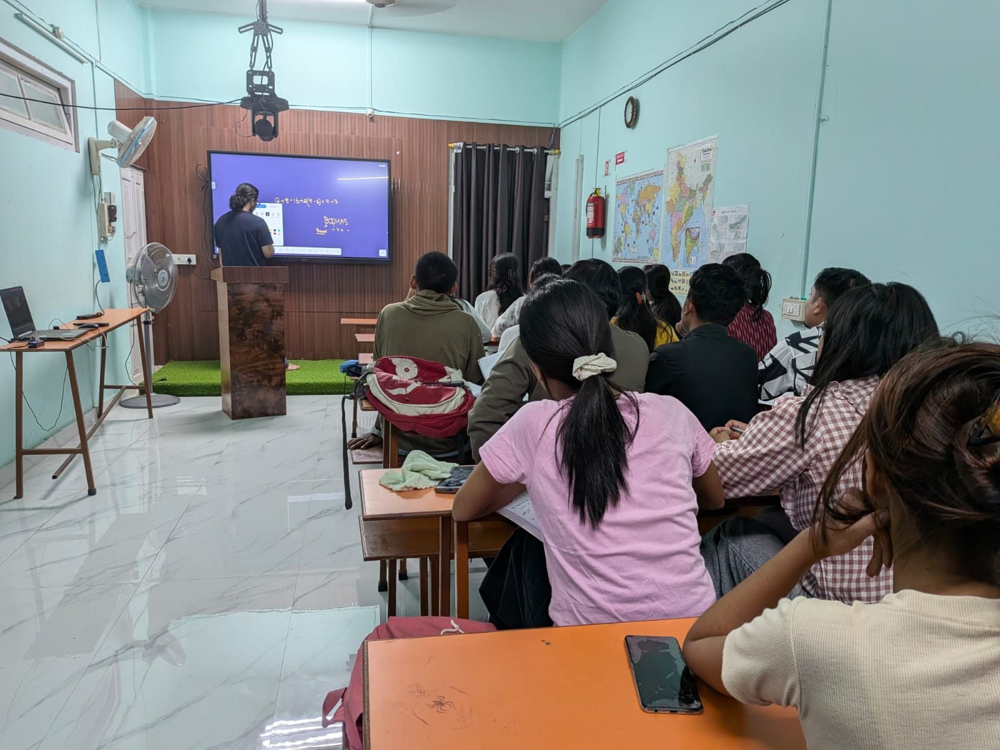

Are you searching for the best banking coaching in Dibrugarh to prepare for IBPS, SBI and Regional Rural Bank examinations? Choosing the right coaching institute can help you follow a structured study plan, strengthen your concepts, practise examination-level questions and improve your preparation strategy.
Scholar Academy of Learning, located in Lachit Nagar, Dibrugarh, Assam, provides competitive examination coaching for students pursuing their government job goals. Aspirants looking for banking exam preparation can enquire about available courses, classroom learning, mock tests and batch schedules.
Before choosing a banking coaching institute, it is important to consider teaching quality, syllabus coverage, practice opportunities, faculty support, fees and the suitability of the course for your target examination.
In this guide, we explain what to look for in a banking coaching institute in Dibrugarh and how Scholar Academy of Learning can help you explore your preparation options.
- Institute: Scholar Academy of Learning
- Location: Lachit Nagar, Dibrugarh, Assam – 786001
- Phone: +91 86387 57905
- Website: https://salcoaching.in/
Contact the academy to enquire about current banking batches, fees and admission details.
- Why Choosing Right Institute Matters
- 5 Factors to Compare Institutes
- Banking Coaching at Scholar Academy
- What to Expect from Preparation
- Which Banking Exams Can You Prepare For?
- Important Subjects Covered
- How Mock Tests Help Preparation
- Who Should Join Banking Coaching?
- Fees and Course Duration
- Frequently Asked Questions
Why Is Choosing the Right Banking Coaching Institute Important?
Banking examinations are competitive and require preparation across several subjects. Candidates often need to balance conceptual understanding, calculation speed, logical reasoning, English language skills and current affairs.
Studying without a clear plan can make it difficult to identify weak areas or measure progress. A suitable coaching programme can provide a more organised learning routine and opportunities to practise examination-style questions.
What to Look for When Comparing Banking Coaching Institutes in Dibrugarh
When comparing banking coaching institutes in Dibrugarh, consider the following key factors:
1. Experienced Teaching
Look for teachers who can explain concepts clearly, demonstrate different problem-solving methods and help students understand their mistakes.
A good learning environment should encourage students to ask questions and strengthen their fundamentals before progressing to advanced topics.
2. Complete Syllabus Coverage
The course should cover the subjects required for your target examination, with sufficient time for practice and revision.
Before enrolling, ask which examinations the batch covers and whether the teaching plan follows the latest official recruitment pattern.
3. Regular Mock Tests
Mock tests help students practise time management and understand how they perform under examination conditions.
However, simply taking tests is not enough. Reviewing incorrect answers, identifying weak topics and revising concepts are equally important.
4. Doubt-Clearing Support
Students may struggle with quantitative aptitude, lengthy reasoning puzzles or English grammar.
Ask whether the institute provides opportunities to discuss difficult questions and receive additional guidance.
5. Convenient Location and Batch Timings
A coaching centre in Dibrugarh may be convenient for students who want to prepare while living at home or attending college.
Choose a batch whose schedule allows sufficient time for classes, self-study, revision and practice tests.
Banking Coaching in Dibrugarh at Scholar Academy of Learning
Scholar Academy of Learning is a competitive examination coaching institute located in Lachit Nagar, Dibrugarh.
Students searching for the best banking coaching in Dibrugarh can contact the academy to understand its banking preparation options and determine whether the available programme suits their learning needs.
What Should You Expect from a Structured Banking Preparation Programme?
A systematic preparation plan should help students work towards the following core goals:
- Build a strong foundation in Quantitative Aptitude.
- Improve Reasoning Ability and logical problem-solving.
- Develop English grammar and reading comprehension skills.
- Study relevant banking and financial awareness topics.
- Practise examination-style questions under time limits.
- Identify weak areas through mock tests and revision.
- Prepare according to the specific requirements of the target examination.
Note: The precise subjects, facilities and support available depend on the current batch. Contact the academy to confirm course inclusions before admission.

Which Banking Exams Can You Prepare For?
Different banking examinations have different eligibility criteria, selection procedures and subject requirements. Understanding your target examination will help you select the right preparation strategy.
Ask Scholar Academy of Learning about current batch availability for the following examinations:
IBPS PO
The Institute of Banking Personnel Selection conducts recruitment for Probationary Officers in participating banks.
Preparation generally involves Quantitative Aptitude, Reasoning Ability, English Language and General or Financial Awareness. Additional assessment stages may apply according to the relevant recruitment notification.
IBPS Clerk / CSA
IBPS Customer Service Associate recruitment is intended for clerical-level positions in participating banks.
Preparation typically focuses on numerical ability, reasoning, English and relevant awareness topics. Candidates should check the current notification for the applicable selection process and examination pattern.
IBPS RRB
IBPS Regional Rural Bank recruitment includes several officer positions and Office Assistant posts.
The subjects and selection stages depend on the particular post. Candidates should review the relevant notification before planning their preparation.
SBI PO
The State Bank of India conducts its own recruitment process for Probationary Officers.
Preparation can involve quantitative aptitude, data interpretation, reasoning, English, financial awareness and additional assessment stages where prescribed.
SBI Clerk / Junior Associate
SBI Junior Associate recruitment is intended for clerical-level positions in the State Bank of India.
Candidates should prepare according to the current examination pattern and review the applicable eligibility and language requirements.
Important Notice:
Confirm which examinations are covered by the current Scholar Academy of Learning banking batch before enrolling.
For official recruitment information, visit official portals at IBPS (ibps.in) and SBI Careers (sbi.bank.in).
Important Subjects Covered in Banking Exam Preparation
A banking preparation programme should be aligned with the examination you intend to take. The following subjects are common preparation areas across many banking recruitment examinations:
Quantitative Aptitude
This subject tests numerical understanding, calculations and problem-solving ability.
Important topics include:
- Percentage, Ratio and Proportion
- Average
- Profit, Loss and Discount
- Simple and Compound Interest
- Time and Work
- Time, Speed and Distance
- Simplification and Approximation
- Number Series
- Quadratic Equations
- Data Interpretation
Reasoning Ability
Reasoning questions test logical thinking, analytical skills and the ability to identify patterns.
Common topics include:
- Coding-Decoding
- Blood Relations
- Direction and Distance
- Syllogism
- Inequalities
- Seating Arrangements
- Puzzles
- Order and Ranking
- Input-Output
- Logical Reasoning
English Language
English preparation helps students improve reading comprehension, grammar and language accuracy.
Important topics include:
- Reading Comprehension
- Grammar and Tenses
- Subject-Verb Agreement
- Error Detection
- Cloze Tests
- Para Jumbles
- Vocabulary
- Sentence Improvement
- Fill in the Blanks
Banking Awareness and Current Affairs
Many banking examinations include General Awareness or Financial Awareness, particularly in their Mains examinations.
Preparation may include:
- Indian Banking System
- Reserve Bank of India
- Monetary Policy
- Banking Terminology
- Financial Inclusion
- Government Financial Schemes
- Important Economic Developments
- National and International Current Affairs
Note: The exact syllabus varies by examination. Use the relevant official notification to decide which topics to prioritise.
How Mock Tests Help in Banking Exam Preparation
Mock tests are an important part of a structured preparation strategy because they help students understand their performance under time constraints.
Regular practice can help candidates identify whether they are spending too much time on particular question types, making repeated calculation errors or neglecting important topics.
To benefit from mock tests, follow these 6 structured steps:
Ask the academy about the availability of mock tests, practice materials and performance analysis in its current banking programme.
.jpeg)
Who Should Join Banking Coaching in Dibrugarh?
Banking exam preparation may suit several categories of aspirants, subject to the eligibility requirements of the examination:
Graduates from Any Stream
Graduates in Arts, Science, Commerce and other disciplines may be eligible for various banking recruitment examinations, depending on the official notification.
College Students
Students can begin developing their quantitative aptitude, reasoning and English skills while pursuing their education. They must satisfy the prescribed qualification and cutoff-date requirements when applying.
Government Job Aspirants
Candidates preparing for other competitive examinations may also consider banking recruitment as an additional career option if they meet the relevant eligibility criteria.
First-Time Candidates
Students who are new to banking examinations can benefit from understanding the syllabus, learning fundamental concepts and developing a consistent practice routine.
Before enrolling, assess your current preparation level, available study time and target examination so you can choose a suitable programme.
Banking Coaching Fees and Course Duration in Dibrugarh
Before choosing a banking coaching institute, compare course fees alongside the value and support included in the programme.
Scholar Academy of Learning has described its banking preparation programme as a six-month course. Contact the academy to confirm the current batch duration, fee structure and available facilities.
What to Ask Before Admission:
- Total course fee and registration charges.
- Batch timings and class schedule.
- Examinations and subjects covered.
- Study materials and practice resources.
- Availability of mock tests.
- Doubt-clearing support.
- Admission dates and payment terms.
Do not select an institute based on fees alone. Consider whether its teaching approach, course coverage and schedule meet your requirements.
For current banking course fees and batch information, contact Scholar Academy of Learning directly at +91 86387 57905.
Frequently Asked Questions About Banking Coaching in Dibrugarh
Contact Scholar Academy of Learning
- Address: Lachit Nagar, Dibrugarh, Assam – 786001
- Phone: +91 86387 57905
- Website: https://salcoaching.in/
Call to action: Contact Scholar Academy of Learning to enquire about banking coaching batches, course fees, class schedules and admission procedures.
Disclaimer: Banking examination patterns, eligibility criteria, selection stages and recruitment schedules may change. Candidates should refer to the applicable official recruitment notification before applying.
About Scholar Academy of Learning: Scholar Academy of Learning provides competitive examination coaching and educational programmes in Assam. Visit salcoaching.in to explore the academy's courses and contact information.